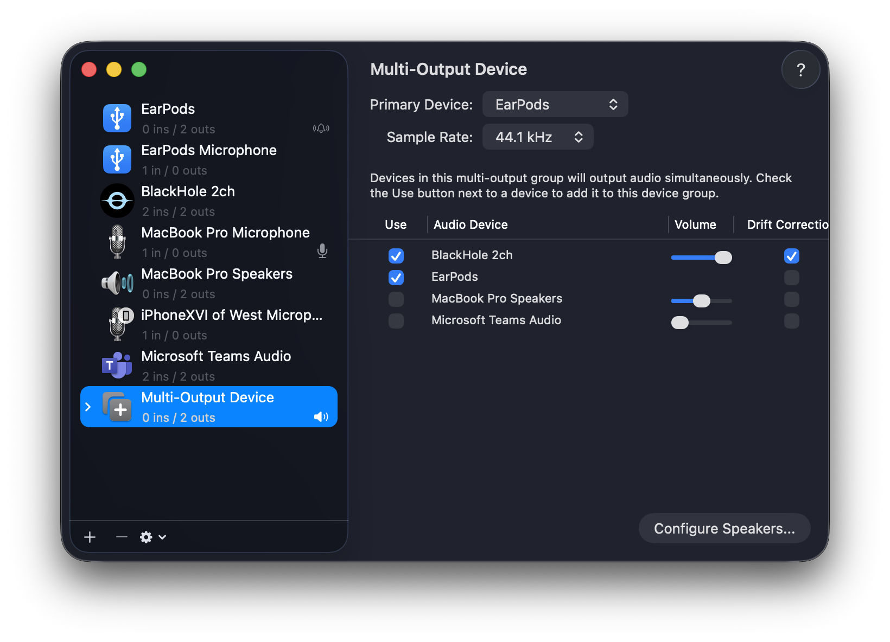

今天尝试了第一次直播，顺手 把过程和踩坑记下来
平台先用 哔哩哔哩，其他渠道以后再折腾
我的哔哩哔哩主页：https://space.bilibili.com/230454104
一、哔哩哔哩直播（macOS 环境）
1. 基本准备
- 设备：macOS
- 平台：哔哩哔哩官方客户端
2. 基本步骤

第一步：下载安装客户端
- 访问官网：https://app.bilibili.com
- 下载并安装 macOS 客户端
- 打开软件并登录账号
第二步：进入直播模式
- 首页切换到「直播」模块
- 点击右下角的「开始直播」按钮
- 选择分享内容，和视频会议类似
- 全屏
- 或指定某个窗口
第三步：开始直播
- 点击「开始直播」
- 如果账号未实名认证：
- 会提示实名认证
- 使用手机 App 扫码即可
- 整个流程很快
第四步：测试直播间
- 点击「分享直播间」
- 可以复制链接到浏览器打开
- 或用微信扫码
- 用另一个设备打开，确认画面和声音是否正常
二、如何分享电脑里的声音（比如放音乐）
如果你想在直播时放点 Apple Music / 网页音乐 / 视频声音，需要用到虚拟音频设备
1. 安装 BlackHole
- 官网：https://existential.audio/blackhole
- 填写邮箱即可免费下载
- 安装完成后 必须重启电脑
- 因为它是驱动级别的软件
2. 让直播听到系统声音
- 重新开启哔哩哔哩直播
- 在直播界面添加素材中：
- 音频设备选择 BlackHole
- 打开 macOS 的 Control Center
- 系统声音输出切换为 BlackHole
- 测试直播间：
- 观众能听到你播放的音乐
- 但此时你自己的耳机是听不到的（正常现象 😂）
三、既能播出去，又能自己听到声音（重点）
自己听不到 🙉 音乐，这可不行啊！！！

1. 创建「多输出设备」
- 使用 Spotlight 搜索并打开「音频 MIDI 设置」
- 左下角点击「＋」
- 选择「创建多输出设备」
2. 关键配置
在右侧勾选以下设备：
- ✅ BlackHole
- ✅ 你的耳机（USB / 蓝牙 / 有线都可以）
然后设置：
- 主设备：选择你的耳机（减少延迟）
- 漂移校正：只给 BlackHole 勾选 ✅
3. 切换系统输出
- 打开 Control Center
- 系统声音输出切换为：
- 新创建的「多输出设备」
- 再次测试：
- 直播间能听到音乐
- 你自己也能通过耳机听到
四、额外知识点：BlackHole 选 2ch 还是 16ch？
1. BlackHole 2ch 是什么？
- 2ch = 双声道（左 / 右），和普通耳机、音箱一致
- 适合：
- Apple Music
- 网页音乐
- 视频播放
- 优点：
- 配置最简单
- 几乎不会出错
- 👉 新手默认选 2ch 就够了
2. BlackHole 16ch 是什么？
- 16ch = 16 路独立音频通道
- 适合对音频有精细控制需求的人
一个真实使用示例：
- ch1–2：Apple Music
- ch3–4：游戏声音
- ch5–6：浏览器
- ch7–8：系统提示音
- ch9–16：备用
3. 一个好记的类比
- 2ch：一个水龙头，打开就有水，怎么用都不容易错
- 16ch：16 路水阀面板，功能很强，但你得知道每根管子接哪
不做专业音频路由，直接选 2ch